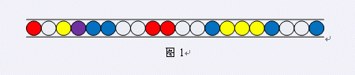
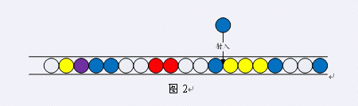
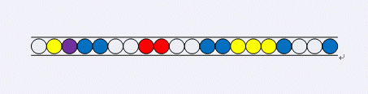
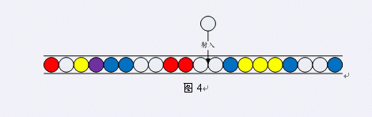
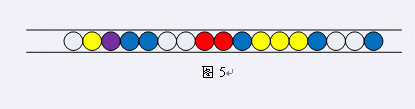
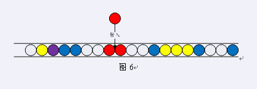
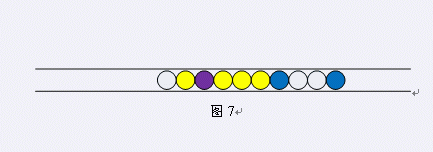

第一行一个整数n（n ≤ 500），表示珠子的个数第二行n个整数（32位整数范围内），用空格分割，每个整数表示一种颜色的珠子。
这是一个流行在Jsoi的游戏，名称为祖玛。精致细腻的背景，外加神秘的印加音乐衬托，彷佛置身在古老的国度里面，进行一个神秘的游戏——这就是著名的祖玛游戏。祖玛游戏的主角是一只石青蛙，石青蛙会吐出各种颜色的珠子，珠子造型美丽，并且有着神秘的色彩，环绕着石青蛙的是载着珠子的轨道，各种颜色的珠子会沿着轨道往前滑动，石青蛙必需遏止珠子们滚进去轨道终点的洞里头，如何减少珠子呢？就得要靠石青蛙吐出的珠子与轨道上的珠子相结合，颜色相同者即可以消失得分！直到轨道上的珠子通通都被清干净为止。 或许你并不了解祖玛游戏。没关系。这里我们介绍一个简单版本的祖玛游戏规则。一条通道中有一些玻璃珠，每个珠子有各自的颜色，如图1所示。玩家可以做的是选择一种颜色的珠子（注意：颜色可以任选，这与真实游戏是不同的）射入某个位置。

图1
图2中玩家选择一颗蓝色珠子，射入图示的位置，于是得到一个图3的局面。

图2

图3 当玩家射入一颗珠子后，如果射入的珠子与其他珠子组成了三颗以上连续相同颜色的珠子，这些珠子就会消失。例如，将一颗白色珠子射入图4中的位置，就会产生三颗颜色相同的白色珠子。这三颗珠子就会消失，于是得到图5的局面。

图4

图5 需要注意的一点是，图4中的三颗连续的黄色珠子不会消失，因为并没有珠子射入其中。珠子的消失还会产生连锁反应。当一串连续相同颜色的珠子消失后，如果消失位置左右的珠子颜色相同，并且长度大于2，则可以继续消失。例如，图6中，射入一颗红色珠子后，产生了三颗连续的红色珠子。当红色珠子消失后，它左右都是白色的珠子，并且一共有四颗，于是白色珠子也消失了。之后，消失位置的左右都是蓝色珠子，共有三颗，于是蓝色珠子也消失。最终得到图7的状态。注意，图7中的三颗黄色珠子不会消失，因为蓝色珠子消失的位置一边是紫色珠子，另一边是黄色珠子，颜色不同。

图6

图7 除了上述的情况，没有其他的方法可以消去珠子。现在，我们有一排珠子，需要你去消除。对于每一轮，你可以自由选择不同颜色的珠子，射入任意的位置。你的任务是射出最少的珠子，将全部珠子消去。
第一行一个整数n（n ≤ 500），表示珠子的个数第二行n个整数（32位整数范围内），用空格分割，每个整数表示一种颜色的珠子。
一个整数，表示最少需要射出的珠子个数。
9
1 1 2 2 3 3 2 1 1
1 据说此题标程有误，致使数据全错....